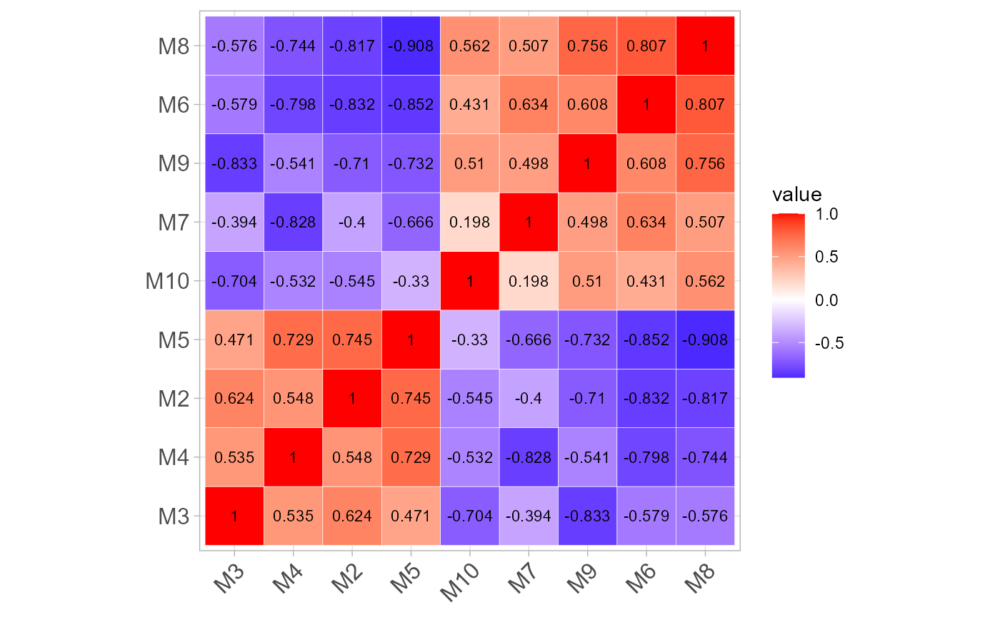
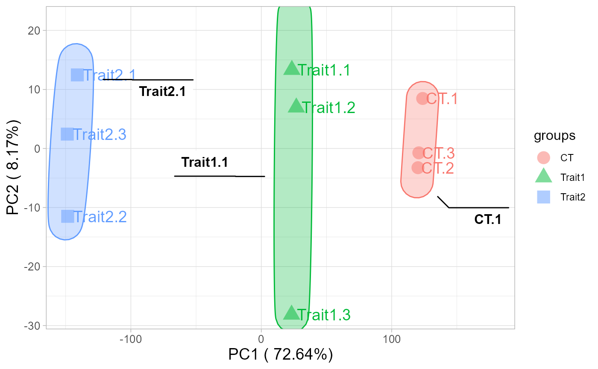

1. Install package
# 1. TOmicsVis
# install.packages("devtools")
# devtools::install_github("benben-miao/TOmicsVis")
library(TOmicsVis)
#> Registered S3 method overwritten by 'GGally':
#> method from
#> +.gg ggplot2
#>
#> Warning: replacing previous import 'GGally::ggtable' by 'enrichplot::ggtable'
#> when loading 'TOmicsVis'
#> Warning: replacing previous import 'enrichplot::color_palette' by
#> 'ggpubr::color_palette' when loading 'TOmicsVis'
#> Warning: replacing previous import 'dplyr::filter' by 'stats::filter' when
#> loading 'TOmicsVis'
#> Warning: replacing previous import 'dplyr::lag' by 'stats::lag' when loading
#> 'TOmicsVis'
#> Warning: replacing previous import 'stats::filter' by 'dplyr::filter' when
#> loading 'TOmicsVis'
# 2. Extra package
# install.packages("ggplot2")
library(ggplot2)2. Usage cases
2.1 corr_heatmap
Correlation Heatmap for samples/groups based on Pearson algorithm.
# 1. Load gene_exp example dataset
data(gene_exp)
head(gene_exp)
#> M1 M2 M3 M4 M5 M6 M7 M8
#> RGL4 8.454808 8.019389 8.990836 9.718631 7.908075 4.147051 4.985084 4.576711
#> MPP7 8.690520 8.630346 7.080873 9.838476 8.271824 5.179200 5.200868 3.266993
#> UGCG 8.648366 8.600555 9.431046 7.923021 8.309214 4.902510 5.750804 4.492856
#> CYSTM1 8.628884 9.238677 8.487243 8.958537 7.357109 4.541605 6.370533 4.246651
#> ANXA2 4.983769 6.748022 6.220791 4.719403 3.284346 8.089850 10.637472 7.214912
#> ENDOD1 5.551640 5.406465 4.663785 3.550765 4.103507 8.393991 9.538503 9.069923
#> M9 M10
#> RGL4 4.930349 4.293700
#> MPP7 5.565226 4.300309
#> UGCG 4.659987 3.306275
#> CYSTM1 4.745769 3.449627
#> ANXA2 9.002710 5.123359
#> ENDOD1 8.639664 7.106392
# 2. Run corr_heatmap plot function
corr_heatmap(
gene_exp,
corr_method = "pearson",
cell_shape = "square",
fill_type = "full",
lable_size = 3,
lable_digits = 3,
color_low = "blue",
color_mid = "white",
color_high = "red",
ggTheme = "theme_light"
)
#> Scale for fill is already present.
#> Adding another scale for fill, which will replace the existing scale.
Get help using command ?TOmicsVis::corr_heatmap or
reference page https://benben-miao.github.io/TOmicsVis/reference/corr_heatmap.html.
# Get help with command in R console.
# ?TOmicsVis::corr_heatmap2.2 pca_plot
PCA dimensional reduction visualization for RNA-Seq.
# 1. Load pca_sample_gene and pca_group_sample example datasets
data(pca_sample_gene)
data(pca_group_sample)
# 2. Run pca_plot plot function
pca_plot(
pca_sample_gene,
pca_group_sample,
point_size = 5,
text_size = 5,
ellipse_alpha = 0.3,
legend_pos = "right",
legend_dir = "vertical",
ggTheme = "theme_light"
)
Get help using command ?TOmicsVis::pca_plot or reference
page https://benben-miao.github.io/TOmicsVis/reference/pca_plot.html.
# Get help with command in R console.
# ?TOmicsVis::pca_plot